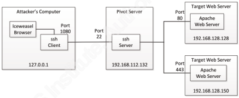

ssh Dynamic Port Forwarding
Requirements:
• SSH server installed on pivot host
• Connectivity to SSH port (22) on the pivot host with credentials for user@pivotSystem
1. establish dynamic port forward
◇ SSH dynamic port forwarding
SSH dynamic port forwarding via SOCKS (Socket Secure) allows arbitrary connections to be proxied to a remote host. Any application that can use a SOCKS can receive and transmit data through the tunnel.
It listens on a local port established when the connection is set up. Anything sent to the local port is forwarded through the SSH tunnel
We have to run this command from the attacker machine against the pivot(exploited?) machine. If the user is an administrator will ask us a password
ssh -D <AttackerIP>:<AttackerSocksProxyPort> -f -N user@<IPpivotSystem>
–f → tells SSH to run in the background
–N → tells SSH not to run a remote command
example:
ssh -N -D 127.0.0.1:1080 user@192.168.1.125
2. Set the SOCKS proxy settings
◇
Enable proxy settings for Linux application with proxychains
Linux applications that don't have the capability to support a proxy can be forced to proxy with a tool called "proxychains".
Proxychains works by replacing standard libraries (via LD_PRELOAD) to trick the application into communication though the proxy.
The port used by proxychains is set in the /etc/proxychains.conf file; the default is TCP/9050. Change it to 1080

if we wnat to use burpsuite as proxy add to proxychains.conf:
#burpsuite
http 127.0.0.1 8080
https 127.0.0.1 8080
To use with python3 scripts
see also: https://blog.ropnop.com/proxying-cli-tools/
convert from .der to .crt → The DER format is simply a binary form of a certificate instead of the ASCII PEM format. It sometimes has a file extension of .der but it often has a file extension of .crt so the only way to tell the difference between a DER .crt file and a PEM .crt file is to open it in a text editor and look for the BEGIN/END statements.
openssl x509 -inform DER -in /home/kali/Downloads/cacert.der -out /home/kali/Downloads/cacert.crt
python3 -c "import certifi; print(certifi.where())" #from which file python3 load certificate for SSL
cat /home/kali/Downloads/cacert.crt >> /etc/ssl/certs/ca-certificates.crt
If the port set with SSH and proxychains.conf match(in our example we have to change it to 1080), you can send traffic from non-proxy aware-applications through the tunnel like this:
proxychains <command of the application and its options>
examples:
proxychains nmap -n -sT -Pn -p <ports> <otherTargetIP>
proxychains python3 GitDorker.py -tf /home/kali/bin/GitDorker/tokens.txt -org tesla -d /home/kali/bin/GitDorker/Dorks/alldorks.txt
◇
Enable proxy settings for Metasploit
We have set the exploit and the payload for the TargetIP
msf > use <exploit>
msf > set RHOST <TargetIP>
msf > set RPORT <TargetPort>
msf > set Proxies socks4:127.0.0.1:1080
msf > set ReverseAllowProxy true #tells Metasploit that the reverse connection will be outside of the proxy.
#in fact how you can see we do not have used the reverse_tcp payload
◇
Enable proxy settings for the Browser
(not so useful for now..)
We can use them to mirror the results obtained from a webserver only accessible from the pivotSystem and not from the outside.
Browsers can be configured to use SOCKS proxy (do not confuse with the HTTP proxy settings is a different proxy technology with a different protocol)
The settings to configure SOCKS proxy can be found usually under preferences > network tab > configuration settings
host: <AttackerLoopbackIP> and port: <AttackerPort>
Or we can use FoxyProxy
Bibliography:
• https://unix.stackexchange.com/questions/115897/whats-ssh-port-forwarding-and-whats-the-difference-between-ssh-local-and-remot
• https://zaiste.net/posts/ssh-port-forwarding/
• https://pen-testing.sans.org/resources/papers/gwapt/tunneling-pivoting-web-application-penetration-testing-120229
#burpsuite
http 127.0.0.1 8080
https 127.0.0.1 8080